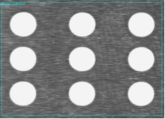
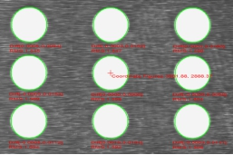
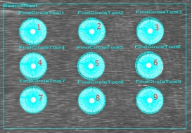

九圆关联标定工具是在指定的搜索区域内对图像坐标和相应的振镜坐标进行关联，其关联结果如图1所示。
 
| 分类 | 参数名称 | 参数描述 |
|---|---|---|
| 属性窗口 | 搜索区域 | 输入搜索区域左上角坐标值、宽度和高度。 |
| 提取方式 | 提取方式分为2种，手动提取和自动提取。 | |
| Mark颜色 | 根据Mark点颜色分为白色和黑色。 | |
| 是否融合像素当量 | 选择“是”，需要对数据链中输入像素当量参数进行配置，是将像素当量值与图像振镜夹角进行融合得到转换矩阵。 | |
| 标定精度 | 完成标定后使用标定结果反向计算出9个圆心的理论激光坐标，并和实际坐标比较得到每个圆心处的标定误差，当圆心标定误差超过此值时，将其误差文本置为红色，以提示用户此标定结果误差过大，仅做提示用，不影响工具的执行成功与否。 | |
| 图像窗口 | 输入图像 | 显示与振镜坐标相关联的图像。 |
| 搜索区域 | 图像中参与查找的仿射矩形区域，同属性窗口的搜索区域参数。 | |
| 数据链 | 输入图像 | 输入图像宽度、高度、像素大小，同图像窗口的输入图像参数。 |
| X轴方向 | 振镜X坐标轴方向。 | |
| Y轴方向 | 振镜Y坐标轴方向。 | |
| 输入像素当量（mm/px） | 像素当量是指每像素所占实际尺寸的大小。 | |
| 高级界面 | 提取方式 | 提取方式分为手动提取和自动提取，同属性窗口的提取方式参数 |
| 颜色特征 | 根据辅助点颜色分为白色和黑色，同属性窗口的Mark颜色参数。 | |
| 标记点位置 | 输入9个振镜坐标点的X和Y分量，同数据链中的辅助点坐标参数。 |
| 分类 | 参数名称 | 参数描述 |
|---|---|---|
| 监视窗口 | 输入图像 | 输出图像宽度、高度、像素大小。 |
| 像素当量 | 输出每像素所占实际尺寸的大小。 | |
| 图像振镜夹角 | 输出的图像坐标系与振镜坐标系之间的夹角。 | |
| 二维线性变换 | 输出图像坐标与振镜坐标关联后的转换矩阵。 | |
| 标记点图像坐标 | 输出图像坐标与振镜坐标关联时的图像标记点坐标，指九圆图像坐标的第5个点的坐标。 | |
| 标记点平台坐标 | 输出图像坐标与振镜坐标关联时的平台标记点坐标，指九圆平台坐标的第5个辅助点坐标。 | |
| 九圆图像坐标 | 输出图像坐标与振镜坐标关联后九圆图像坐标。 | |
| 九圆平台坐标 | 输出的九圆平台坐标，即输入参数中的9个辅助点坐标。 | |
| 标定结果 | 标定后参数的结果值，供后面位置计算工具使用。 | |
| 标定信息 | 标定信息字符串。 | |
| 执行结果 | 工具执行结果。 | |
| 执行时间 | 工具执行时间。 | |
| 图像窗口 | 输入图像 | 显示与振镜坐标相关联的图像，同监视窗口的输出图像参数。 |
| 执行结果 | 显示工具执行结果，执行成功显示“OK”，执行失败显示“NG”，同监视窗口的执行结果参数。 | |
| 数据链 | 像素当量 | 输出每个像素所占实际尺寸的大小，供后序工具使用，同监视窗口的像素当量参数。 |
| 图像振镜夹角 | 输出图像坐标系与振镜坐标系之间的夹角。 | |
| 二维线性变换 | 输出图像坐标与振镜坐标关联后的转换矩阵，供后序振镜打标位置计算工具使用，同监视窗口的二维线性变换参数。 | |
| 标记点图像坐标 | 输出图像标记点坐标，供后序振镜打标位置计算工具使用，同监视窗口的标记点图像坐标参数。 | |
| 标记点平台坐标 | 输出平台标记点坐标，供后序振镜打标位置计算工具使用，同监视窗口的标记点平台坐标参数。 | |
| 九圆图像坐标 | 输出图像坐标与振镜坐标关联后图像坐标，供后序振镜打标位置计算工具使用，同监视窗口的图像坐标参数。 | |
| 九圆平台坐标 | 输出的九圆平台坐标，供后序振镜打标位置计算工具使用，同监视窗口的振镜坐标参数。 | |
| 标定结果 | 标定后参数的结果值，供后面位置计算工具使用。 |
手动提取是指在搜索区域内手动摆放卡尺提取辅助点，其中搜索区域内卡尺的摆放顺序如图2所示，找圆卡尺与辅助点是一一对应的关系。自动提取指在搜索区域内自动提取辅助点坐标。

九圆标定工具在手动提取模式下，鼠标左键双击其中一个找圆卡尺，在弹出的属性对话框中改变其参数(卡尺数量和卡尺搜索方向)，然后鼠标拖动该找圆卡尺(改变搜索长度和投影长度参数)，即可完成所有找圆卡尺的同步刷新。
九圆关联标定工具与振镜打标位置计算工具配合使用。
参见“\Samples\九圆关联标定工具.gvp”。